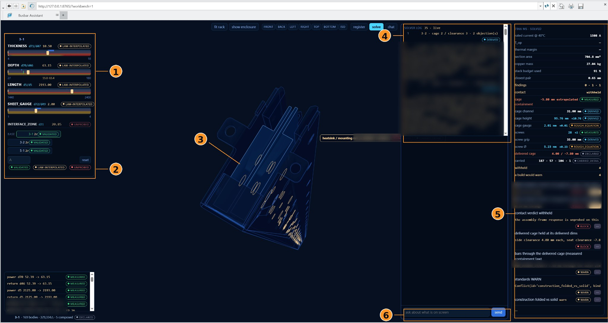

The idea
The engineer and the model change the same short list of design parameters, and neither writes geometry directly. A solver checks every change in milliseconds, before the CAD software runs, and refuses the ones it cannot prove. In trial, a design took 8 to 12 minutes.
1Background
A busbar is a solid metal conductor that distributes power inside electrical equipment. TE designs them to requests like the one typed in the video: a current, an ambient temperature, a maximum temperature and a length. Producing the CAD for one design takes an engineer 3 to 4 days, and a single change can move several dimensions at once.
The hard part is trust. Each trial of a change in CAD takes one to two minutes to rebuild. A language model can read a request, but it cannot be relied on to write geometry, and an engineer will not accept an edit that nobody has checked.
2How the automation works
One explicit design state. Everything the system knows about a busbar family sits in one place: the engineering parameters, how they depend on each other, the range each one may take, and where each value came from. The engineer and the language model both work on this state. Neither of them writes geometry directly.
Two controllers, the same tools. The engineer can move sliders, type values, and pin a value so nothing else may change it. The language model runs on the same PC, reads the same state, and acts only through tool calls: it resolves a request into a typed change to a named parameter. Both use the same tool surface to edit the state, check a change and request a build.
A solver that proves each change first. Before anything is written to CAD, a geometry solver checks the change against a digital twin of the assembly: exact 2D section arithmetic, a 1D layout along the conductor, a conflict engine with six classes of conflict, and a clearance envelope for the whole assembly. The verdict arrives in milliseconds, with the specific clash and the margin left, against one to two minutes for a trial in CAD.
Native CAD, driven in place. A proven change becomes a small typed program that does not depend on the CAD system, and an adapter runs it on the native Creo Parametric model through PTC's supported API, so the feature tree stays intact and the result is an ordinary Creo model. The rebuilt assembly is measured against what the solver predicted, and if the two drift apart the change is rolled back.
Findings tied to standards. A component graph of mating constraints and fasteners describes how the parts connect. Checks against IEC 61439-6, IEC 60664-1 and IEC 60865-1 are reported as findings, each with the clause it comes from.
3The interface


- Direct engineering parameters. Thickness, depth, length and sheet gauge as sliders, each with the range it may take. The engineer can move through the design without asking the model anything.
- Where each value comes from. Every value carries a tag: validated, interpolated from the known designs, or unprobed. Direct control still comes with context and a level of confidence.
- One shared 3D state. The model in the centre updates whether the engineer or the agent made the change.
- The solver trace. The same actions and checks the agent calls are listed here, step by step, so nothing happens out of sight.
- The verdicts. Section area, clearances, the closest pair of parts, and each finding marked block or warn. Physics and geometry results stay visible to the engineer instead of being hidden inside the agent.
- Language beside direct control. The chat box is one more way to drive the same state, not a separate mode.


4How it got here
The interface was shaped by working with TE's busbar engineers and testing the system on their machines in Bengaluru. Three choices came out of that:
- The engineer changes a dimension directly, without going through the model. The language model is one controller among two, not the one in charge.
- Every value says where it came from, so the engineer knows how far to trust it.
- Every check the system runs is on screen, with its verdict. Nothing is accepted on the agent's word.
What came out is less an AI tool than a design tool that an AI can also use.

5Results
The 77% comes from a side-by-side test against busbars drawn by TE's designers, holding out one designer at a time. The system is deployed on TE's internal environment in Bengaluru, where it is in trial, and I present it in monthly reviews to TE's global busbar engineering leadership.
I led the CAD automation. Lokesh Dandumahanti led the requirements and sizing work.
6What's next
Today the design space is written by hand: which parameters exist, how they depend on each other and where their limits are. That was the slowest part of the project. The question I want to work on next is whether that structure can be recovered from a family's existing CAD models and engineering records, so the same kind of system can be set up for a new product family without writing it all down first.